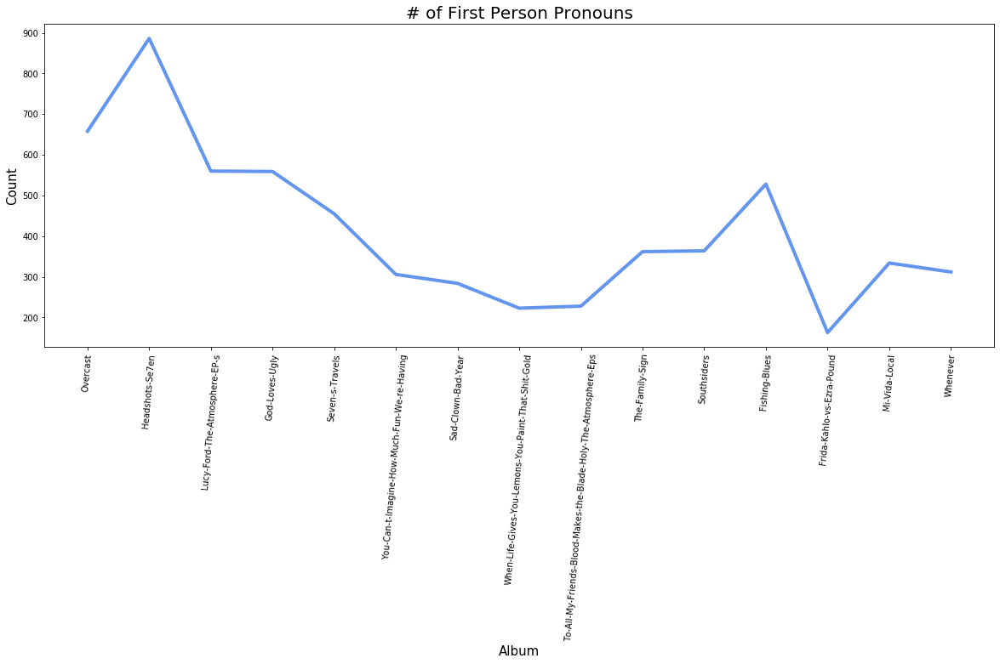

Atmosphere-Graphing First Person Singular Pronouns¶
from sklearn.feature_extraction.text import TfidfVectorizer
from sklearn.feature_extraction.text import CountVectorizer
import pandas as pd
pd.set_option("max_rows", 200)
pd.set_option("max_columns", 200)
pd.options.display.float_format = lambda value : '{:.0f}'.format(value) if round(value,0) == value else '{:,.3f}'.format(value)
from pathlib import Path
import glob
import matplotlib.pyplot as plt
import matplotlib.colors as mcolors
import matplotlib.ticker as ticker
import numpy as np
directory_path = "../Atmosphere/"
text_files = glob.glob(f"{directory_path}/*.txt")
album_titles = [Path(text).stem for text in text_files]
#STOPS = open('../stop-words.txt', encoding="utf-8").read().split('\n')
#Initialize CountVectorizer with desired parameters
count_vectorizer= CountVectorizer(input='filename', stop_words= None, token_pattern=r'\S+')
#Plug in "text_files," which contains all the albums, to the initialized count_vectorizer
word_count_vector = count_vectorizer.fit_transform(text_files)
#Make a DataFrame out of the word count vector and sort by title
word_count_df = pd.DataFrame(word_count_vector.toarray(), index=album_titles, columns=count_vectorizer.get_feature_names())
word_count_df = word_count_df.sort_index()
#adding in the years manually into a correctly ordered list
year = [2016, 2016, 2002, 1999, 2001, 2018, 1997, 2007, 2003, 2014, 2011, 2010, 2008, 2019, 2005]
word_count_df['year'] = year
#Add column for number of times each word appears in all the documents
word_count_df.loc['Document Frequency'] = (word_count_df > 0).sum()
word_count_df.sample(10, axis='columns')
| drummer | людьми | jug | of, | mic's | temps | flow, | escapist | greatest | whore, | |
|---|---|---|---|---|---|---|---|---|---|---|
| Fishing-Blues | 0 | 0 | 1 | 0 | 0 | 0 | 0 | 0 | 0 | 0 |
| Frida-Kahlo-vs-Ezra-Pound | 0 | 0 | 0 | 0 | 0 | 0 | 0 | 0 | 0 | 0 |
| God-Loves-Ugly | 0 | 0 | 0 | 2 | 0 | 0 | 0 | 0 | 0 | 0 |
| Headshots-Se7en | 0 | 0 | 0 | 0 | 1 | 0 | 1 | 0 | 0 | 0 |
| Lucy-Ford-The-Atmosphere-EP-s | 0 | 0 | 0 | 1 | 0 | 0 | 0 | 1 | 0 | 0 |
| Mi-Vida-Local | 0 | 0 | 0 | 0 | 0 | 0 | 0 | 0 | 0 | 0 |
| Overcast | 0 | 0 | 0 | 0 | 1 | 0 | 0 | 0 | 0 | 0 |
| Sad-Clown-Bad-Year | 0 | 0 | 0 | 0 | 0 | 0 | 0 | 0 | 0 | 0 |
| Seven-s-Travels | 0 | 0 | 0 | 0 | 0 | 0 | 0 | 0 | 0 | 1 |
| Southsiders | 0 | 0 | 0 | 0 | 0 | 0 | 1 | 0 | 0 | 0 |
| The-Family-Sign | 0 | 0 | 0 | 0 | 0 | 0 | 0 | 0 | 0 | 0 |
| To-All-My-Friends-Blood-Makes-the-Blade-Holy-The-Atmosphere-Eps | 0 | 0 | 0 | 0 | 0 | 0 | 0 | 0 | 0 | 0 |
| When-Life-Gives-You-Lemons-You-Paint-That-Shit-Gold | 0 | 0 | 0 | 0 | 0 | 0 | 0 | 0 | 1 | 0 |
| Whenever | 0 | 1 | 0 | 0 | 0 | 1 | 0 | 0 | 1 | 0 |
| You-Can-t-Imagine-How-Much-Fun-We-re-Having | 1 | 0 | 0 | 0 | 0 | 0 | 0 | 0 | 0 | 0 |
| Document Frequency | 1 | 1 | 1 | 2 | 2 | 1 | 2 | 1 | 2 | 1 |
“I” frequency¶
removed first person pronouns from the stopwords list to search for them
first_list = ['me', 'myself', 'my', 'mine', 'i']
first_df = word_count_df.sort_values(by = 'year')[first_list]
first_df
| me | myself | my | mine | i | |
|---|---|---|---|---|---|
| Document Frequency | 15 | 14 | 15 | 13 | 15 |
| Overcast | 106 | 1 | 192 | 1 | 358 |
| Headshots-Se7en | 225 | 2 | 220 | 0 | 439 |
| Lucy-Ford-The-Atmosphere-EP-s | 69 | 6 | 173 | 1 | 311 |
| God-Loves-Ugly | 109 | 1 | 131 | 1 | 317 |
| Seven-s-Travels | 93 | 5 | 126 | 1 | 230 |
| You-Can-t-Imagine-How-Much-Fun-We-re-Having | 69 | 2 | 57 | 4 | 174 |
| Sad-Clown-Bad-Year | 59 | 0 | 66 | 1 | 158 |
| When-Life-Gives-You-Lemons-You-Paint-That-Shit-Gold | 48 | 1 | 49 | 1 | 124 |
| To-All-My-Friends-Blood-Makes-the-Blade-Holy-The-Atmosphere-Eps | 24 | 2 | 39 | 2 | 161 |
| The-Family-Sign | 71 | 1 | 95 | 2 | 193 |
| Southsiders | 38 | 2 | 81 | 1 | 242 |
| Fishing-Blues | 47 | 5 | 127 | 4 | 345 |
| Frida-Kahlo-vs-Ezra-Pound | 14 | 3 | 31 | 0 | 115 |
| Mi-Vida-Local | 59 | 4 | 72 | 1 | 198 |
| Whenever | 41 | 3 | 59 | 5 | 204 |
newfirst_df = first_df.drop('Document Frequency', errors='ignore')
newfirst_df
| me | myself | my | mine | i | |
|---|---|---|---|---|---|
| Overcast | 106 | 1 | 192 | 1 | 358 |
| Headshots-Se7en | 225 | 2 | 220 | 0 | 439 |
| Lucy-Ford-The-Atmosphere-EP-s | 69 | 6 | 173 | 1 | 311 |
| God-Loves-Ugly | 109 | 1 | 131 | 1 | 317 |
| Seven-s-Travels | 93 | 5 | 126 | 1 | 230 |
| You-Can-t-Imagine-How-Much-Fun-We-re-Having | 69 | 2 | 57 | 4 | 174 |
| Sad-Clown-Bad-Year | 59 | 0 | 66 | 1 | 158 |
| When-Life-Gives-You-Lemons-You-Paint-That-Shit-Gold | 48 | 1 | 49 | 1 | 124 |
| To-All-My-Friends-Blood-Makes-the-Blade-Holy-The-Atmosphere-Eps | 24 | 2 | 39 | 2 | 161 |
| The-Family-Sign | 71 | 1 | 95 | 2 | 193 |
| Southsiders | 38 | 2 | 81 | 1 | 242 |
| Fishing-Blues | 47 | 5 | 127 | 4 | 345 |
| Frida-Kahlo-vs-Ezra-Pound | 14 | 3 | 31 | 0 | 115 |
| Mi-Vida-Local | 59 | 4 | 72 | 1 | 198 |
| Whenever | 41 | 3 | 59 | 5 | 204 |
newfirst_df['Total'] = newfirst_df.sum(axis=1)
newfirst_df
| me | myself | my | mine | i | Total | |
|---|---|---|---|---|---|---|
| Overcast | 106 | 1 | 192 | 1 | 358 | 658 |
| Headshots-Se7en | 225 | 2 | 220 | 0 | 439 | 886 |
| Lucy-Ford-The-Atmosphere-EP-s | 69 | 6 | 173 | 1 | 311 | 560 |
| God-Loves-Ugly | 109 | 1 | 131 | 1 | 317 | 559 |
| Seven-s-Travels | 93 | 5 | 126 | 1 | 230 | 455 |
| You-Can-t-Imagine-How-Much-Fun-We-re-Having | 69 | 2 | 57 | 4 | 174 | 306 |
| Sad-Clown-Bad-Year | 59 | 0 | 66 | 1 | 158 | 284 |
| When-Life-Gives-You-Lemons-You-Paint-That-Shit-Gold | 48 | 1 | 49 | 1 | 124 | 223 |
| To-All-My-Friends-Blood-Makes-the-Blade-Holy-The-Atmosphere-Eps | 24 | 2 | 39 | 2 | 161 | 228 |
| The-Family-Sign | 71 | 1 | 95 | 2 | 193 | 362 |
| Southsiders | 38 | 2 | 81 | 1 | 242 | 364 |
| Fishing-Blues | 47 | 5 | 127 | 4 | 345 | 528 |
| Frida-Kahlo-vs-Ezra-Pound | 14 | 3 | 31 | 0 | 115 | 163 |
| Mi-Vida-Local | 59 | 4 | 72 | 1 | 198 | 334 |
| Whenever | 41 | 3 | 59 | 5 | 204 | 312 |
Graph¶
first person pronouns
values = newfirst_df[['Total']]
plt.figure(figsize=(20, 7))
plt.plot(newfirst_df.index, values, color='cornflowerblue', linewidth = 4.0)
plt.xlabel('Album', fontsize = 15)
plt.ylabel('Count', fontsize = 15)
plt.title('# of First Person Pronouns', fontsize = 20)
plt.xticks(rotation=85)
plt.show()
plt.savefig('first_person.png', bbox_inches='tight')

<Figure size 432x288 with 0 Axes>